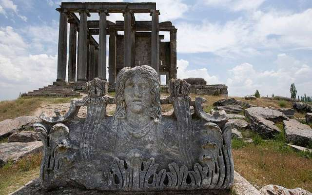

Anatolia en época romana. Con teatros, calles columnadas y acueductos, Roma convirtió Anatolia en una de las provincias más ricas de su mundo. Después de que el rey Átalo III de Pérgamo legara su reino a Roma en el 133 a. C., las ciudades de Anatolia pasaron a ser algunas de las regiones más pobladas y prósperas del imperio. Durante la Pax Romana se llenaron de teatros, termas, bibliotecas, calles columnadas y fuentes monumentales. Aspendos, cerca de Antalya, tiene uno de los teatros mejor conservados del mundo romano, que aún acoge espectáculos. La calle columnada de Perge, los templos junto al mar de Side, Termessos y Sagalassos en las montañas y Aizanoi, con su templo de Zeus bien conservado en Kütahya, están entre las ciudades más impresionantes de la época. Hierápolis, sobre los travertinos de Pamukkale, es Patrimonio de la UNESCO desde 1988. Las huellas de Roma no están solo en la costa: las Termas Romanas de Ankara, el famoso mosaico de la «Niña Gitana» en el Museo de Mosaicos de Zeugma (Gaziantep) y Uzuncaburç y Anemurium en Mersin muestran lo extendido de este legado.
Con teatros, calles columnadas y acueductos, Roma convirtió Anatolia en una de las provincias más ricas de su mundo.
Después de que el rey Átalo III de Pérgamo legara su reino a Roma en el 133 a. C., las ciudades de Anatolia pasaron a ser algunas de las regiones más pobladas y prósperas del imperio. Durante la Pax Romana se llenaron de teatros, termas, bibliotecas, calles columnadas y fuentes monumentales.
Aspendos, cerca de Antalya, tiene uno de los teatros mejor conservados del mundo romano, que aún acoge espectáculos. La calle columnada de Perge, los templos junto al mar de Side, Termessos y Sagalassos en las montañas y Aizanoi, con su templo de Zeus bien conservado en Kütahya, están entre las ciudades más impresionantes de la época. Hierápolis, sobre los travertinos de Pamukkale, es Patrimonio de la UNESCO desde 1988.
Las huellas de Roma no están solo en la costa: las Termas Romanas de Ankara, el famoso mosaico de la «Niña Gitana» en el Museo de Mosaicos de Zeugma (Gaziantep) y Uzuncaburç y Anemurium en Mersin muestran lo extendido de este legado.
Dónde ver esta época
 AspendosAntalya
AspendosAntalya Yacimiento de PergeAntalya
Yacimiento de PergeAntalya Yacimiento de SideAntalya
Yacimiento de SideAntalya Yacimiento de TermessosAntalya
Yacimiento de TermessosAntalya Yacimiento de SagalassosBurdur
Yacimiento de SagalassosBurdur
Yacimiento de AizanoiKütahya Yacimiento de Hierápolis (Pamukkale)Denizli
Yacimiento de Hierápolis (Pamukkale)Denizli Yacimiento de LaodiceaDenizli
Yacimiento de LaodiceaDenizli Museo y yacimiento de AfrodisiasAydın
Museo y yacimiento de AfrodisiasAydın Casas del Ladera de ÉfesoIzmir
Casas del Ladera de ÉfesoIzmir Termas romanas de AnkaraAnkara
Termas romanas de AnkaraAnkara Museo de los Mosaicos de ZeugmaGaziantep
Museo de los Mosaicos de ZeugmaGaziantep Yacimiento de AnemurioMersin
Yacimiento de AnemurioMersin Yacimiento de UzuncaburçMersin
Yacimiento de UzuncaburçMersin🎓 Pon a prueba lo aprendido
1. ¿En qué año se legó el reino de Pérgamo a Roma?
2. ¿Qué teatro, aún en uso, está entre los mejor conservados?
3. ¿Dónde está el mosaico de la «Niña Gitana»?
4. ¿Qué ciudad antigua está sobre los travertinos de Pamukkale?